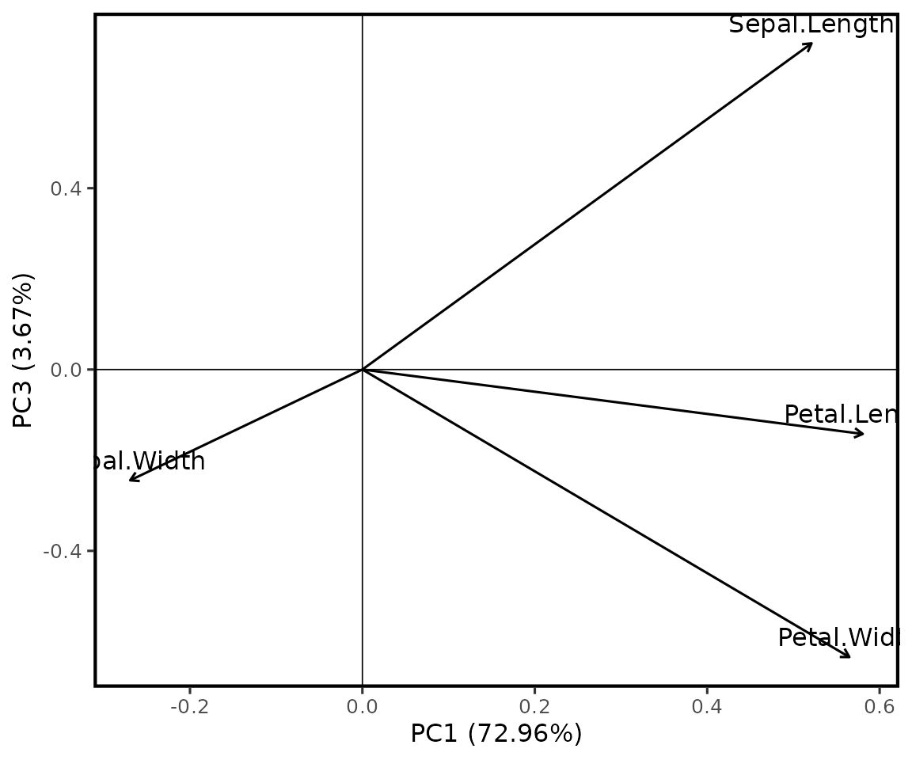

pca_agri()
A função utiliza stats::prcomp() e mantém o objeto
original. Ela não remove linhas com dados ausentes e interrompe o ajuste
quando encontra variáveis sem variabilidade.
Exemplo 1: PCA padronizada com grupo
pca1 <- pca_agri(
iris,
vars = c(Sepal.Length, Sepal.Width, Petal.Length, Petal.Width),
group = Species
)
pca1
#> Análise de componentes principais
#> ---------------------------------
#> Variáveis: Sepal.Length, Sepal.Width, Petal.Length, Petal.Width
#> Centralização: sim; padronização: sim
#>
#> componente autovalor variancia variancia_percentual variancia_acumulada
#> PC1 2.91849782 0.729624454 72.9624454 0.7296245
#> PC2 0.91403047 0.228507618 22.8507618 0.9581321
#> PC3 0.14675688 0.036689219 3.6689219 0.9948213
#> PC4 0.02071484 0.005178709 0.5178709 1.0000000
#> acumulada_percentual
#> 72.96245
#> 95.81321
#> 99.48213
#> 100.00000Exemplo 2: sem padronização
pca2 <- pca_agri(
iris,
vars = c(Sepal.Length, Sepal.Width, Petal.Length, Petal.Width),
scale = FALSE
)
pca2$variancia
#> componente autovalor variancia variancia_percentual variancia_acumulada
#> 1 PC1 4.22824171 0.924618723 92.4618723 0.9246187
#> 2 PC2 0.24267075 0.053066483 5.3066483 0.9776852
#> 3 PC3 0.07820950 0.017102610 1.7102610 0.9947878
#> 4 PC4 0.02383509 0.005212184 0.5212184 1.0000000
#> acumulada_percentual
#> 1 92.46187
#> 2 97.76852
#> 3 99.47878
#> 4 100.00000Exemplo 3: limitar componentes reportados
pca3 <- pca_agri(
iris,
vars = c(Sepal.Length, Sepal.Width, Petal.Length, Petal.Width),
ncomp = 3
)
pca3$contribuicao
#> PC1 PC2 PC3 variavel
#> 1 27.150969 14.24440565 51.777574 Sepal.Length
#> 2 7.254804 85.24748749 5.972245 Sepal.Width
#> 3 33.687936 0.05998389 2.019990 Petal.Length
#> 4 31.906291 0.44812296 40.230191 Petal.WidthComponentes da saída
head(pca1$escores)
#> PC1 PC2 PC3 PC4 .linha Species
#> 1 -2.257141 -0.4784238 0.12727962 0.024087508 1 setosa
#> 2 -2.074013 0.6718827 0.23382552 0.102662845 2 setosa
#> 3 -2.356335 0.3407664 -0.04405390 0.028282305 3 setosa
#> 4 -2.291707 0.5953999 -0.09098530 -0.065735340 4 setosa
#> 5 -2.381863 -0.6446757 -0.01568565 -0.035802870 5 setosa
#> 6 -2.068701 -1.4842053 -0.02687825 0.006586116 6 setosa
pca1$cargas
#> PC1 PC2 PC3 PC4 variavel
#> 1 0.5210659 -0.37741762 0.7195664 0.2612863 Sepal.Length
#> 2 -0.2693474 -0.92329566 -0.2443818 -0.1235096 Sepal.Width
#> 3 0.5804131 -0.02449161 -0.1421264 -0.8014492 Petal.Length
#> 4 0.5648565 -0.06694199 -0.6342727 0.5235971 Petal.Width
pca1$variancia
#> componente autovalor variancia variancia_percentual variancia_acumulada
#> 1 PC1 2.91849782 0.729624454 72.9624454 0.7296245
#> 2 PC2 0.91403047 0.228507618 22.8507618 0.9581321
#> 3 PC3 0.14675688 0.036689219 3.6689219 0.9948213
#> 4 PC4 0.02071484 0.005178709 0.5178709 1.0000000
#> acumulada_percentual
#> 1 72.96245
#> 2 95.81321
#> 3 99.48213
#> 4 100.00000
pca1$contribuicao
#> PC1 PC2 PC3 PC4 variavel
#> 1 27.150969 14.24440565 51.777574 6.827052 Sepal.Length
#> 2 7.254804 85.24748749 5.972245 1.525463 Sepal.Width
#> 3 33.687936 0.05998389 2.019990 64.232089 Petal.Length
#> 4 31.906291 0.44812296 40.230191 27.415396 Petal.Width
plot_pca_agri()
Exemplo 3: cargas PC1 × PC3
plot_pca_agri(pca3, axes = c(1, 3), type = "loadings", labels = TRUE)